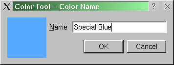
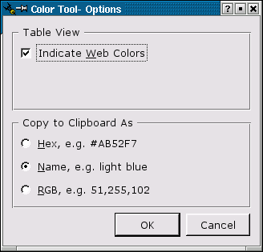
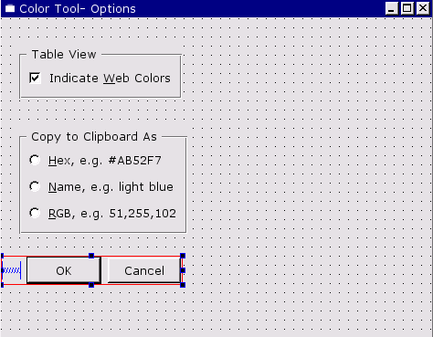

| Home | All Classes | Main Classes | Annotated | Grouped Classes | Functions |
[Prev: Creating a Main Window Application] [Home] [Next: The Designer Approach]
In this chapter we will create the dialogs necessary to complete the colortool application. All the dialogs are launched from the main window we created in the previous chapter. We will learn how to create and use both modal and modeless dialogs, and more about using Qt's layout classes in Qt Designer to produce forms that are well proportioned and that scale well.
Qt already has a static function that launches a "choose a color" dialog. But we need to not only choose a color, but to give it a name too. So we'll present the user with the choose a color dialog, and if they choose a color, we'll then ask them to name it.

When we created the main form we made an action called "editAddAction". We added this action to the menubar (in the "Edit" menu), and to the toolbar. Now we need to connect this action to a slot so that we can make it add a color.
Click Edit|Connections to invoke the View and Edit Connections dialog. Click New to create a new connection. Change the Sender to "editAddAction", the signal to "activated()" and the receiver to "MainForm". We need to create a new slot to connect to. Click Edit Slots to invoke the Edit Functions dialog. Click New Function and change the slot's name to "editAdd()", then click OK. Now change the slot we connect to "editAdd()", then click OK to close the dialog.
Selecting Widgets
To select an individual widget, either click the widget itself or click its Name in Object Explorer. To select a group either click a fraction outside its red outline or click its Name in Object Explorer.
If you want to insert a widget into a gap between widgets which are in a layout we can click the toolbar button for the new widget and then click in the gap. Qt Designer will ask us if we want to break the layout and if we click Break Layout the layout will be broken and our widget inserted. We can then select the widgets and groups we want to lay out and lay them out again. The same effect can be achieved by clicking the group and either clicking the Break Layout toolbar button or pressing Ctrl+B.
Multiple widgets can be selected in five different ways:
Click the first widget, then Shift+Click the other widgets.
Ctrl+Click the first widget, then Ctrl+Click the other widgets; this is like the first technique but allows you to select widgets that are inside another widget (e.g. inside a group).
Click the form and drag the rectangular rubber band to touch all the widgets you are interested in.
Ctrl+Click the first widget, then drag the rectangular rubber band to touch the other widgets. This differs from the previous technique in that it allows you to select widgets that are inside another widget (e.g. inside a group).
Click Object Explorer's Objects tab. Click the first widget in Object Explorer, then Shift+Click the other widgets. This is especially useful for picking out widgets when you have lots of complex layouts.
When multiple widgets are selected their common properties are shown in the Property Editor. Any changes made in the Property Editor will be applied to all the selected widgets. This is particularly useful for setting common minimum and maximum sizes, colors, size policies, cursors, fonts, etc.
Layouts provide a means of laying out widgets, groups of widgets, and layouts into horizontal and vertical pairs and into grids. If you use layouts your forms, and the widgets they contain, will scale automatically when the user resizes the window. This is better than using absolute sizes and positions since you don't have to write any code to achieve the scaling and your users can make the most of their screen size whether they have a laptop or a very large screen desktop machine. Layouts use standard sizes for margins and widget spacing which helps give your applications a consistent and proportional look without requiring any effort on your part. Layouts are also easier and faster to use than absolute positioning; you can just place your widgets on the form in approximate positions and leave the layout tools to size and scale the widgets correctly.
We can use one of Qt's static dialogs to get the user to choose a color, but we need our own dialog to get them to give it a name. We'll create that dialog now.
Click File|New to invoke the New File dialog, then click "Dialog", then click OK. Drag a corner of the new form to make it a lot smaller. Change the form's name (in the Property Editor) to "ColorNameForm", and change its caption to "Color Tool -- Color Name". Click File|Save, then click Save to save it.
We'll now add some widgets to the dialog. Don't worry about precise positioning or sizing; we'll get Qt Designer to lay the form out perfectly for us shortly.
We need to create a QLabel that will show the color the user has chosen. Click the TextLabel tool in the Toolbox, then click on the left hand side of the form. Change the label's name property to "colorLabel", and delete the text in the text property. Click the pixmap property's ellipsis button and choose the "editraise.png" image. Change the minimumSize property's width sub-property to 80, and set the scaledContents property to True.
Click the TextLabel tool again, then click to the right of the colorLabel, towards the top of the form. Change the text property to "&Name". Note that the ampersand is displayed; this is because a QLabel cannot accept focus and we haven't specified a focus widget ("buddy") yet.
Click the LineEdit tool, then click to the right of the "Name" label, again towards the top of the form. Change the name property to "colorLineEdit".
Click on the "Name" label and change its buddy property to "colorLineEdit". The ampersand has now disappeared and Alt+N will set the focus in the colorLineEdit.
Click the PushButton tool, then click below the "colorLabel". Change the button's name property to "okPushButton", its text property to "OK", and its default property to True.
Click the PushButton tool again, then click to the right of the OK button. Change this button's name property to "cancelPushButton" and its text property to "Cancel".
Now that we've created and roughly placed the widgets we need we are ready to lay them out.
The process of laying out widgets is essentially two steps:
select two or more widgets (or layouts)
apply a layout method (vertical, horizontal, grid) to the selected items
Qt Designer provides several different ways of selecting widgets and layouts. It doesn't matter which you use; some are more convenient in certain situations that others. We'll show several different approaches to selecting widgets as we lay out this form.
We will lay out the "Name" label and the line edit side by side. Then we'll do the same for the buttons, and finally we'll lay out these two layouts in relation to the colorLabel.
Click the form to deselect any selected widgets. Click the form above the "Name" label and drag the black rectangular elastic band so that it touches both the "Name" label and the line edit; then release. (It only has to be touching them when you release.) The "Name" label and the line edit are now selected. Click the Lay Out Horizontally toolbar button. A thin red rectangle appears to indicate the layout (this only shows up as a visual cue in Qt Designer, it doesn't appear in preview mode or in the running form).
Click the form to deselect any selected widgets. In Object Explorer's Objects tab click the "cancelPushButton" to select it. Now Shift+Click the OK button in the Objects tab. (The Objects tab only ever highlights one object; but the form shows that both buttons are selected.) Click the Lay Out Horizontally toolbar button.
Click the form to deselect any selected widgets. In Objects Explorer, click "Layout1" (which contains the "Name" label and the line edit), then Shift+Click "Layout2" (which contains the buttons) so that both layouts are selected on the form. Click the Lay Out Vertically toolbar button.
Now that we've got our two layouts (and the colorLabel widget), we'll lay them all out in relation to the form.
Click the form to deselect any selected widgets. Click the Lay Out Horizontally toolbar button to lay out the form. (The form gets laid out because no widgets or layouts are selected.)
Preview the form (Ctrl+T), and try resizing it. Unfortunately, when you make the form larger the buttons expand too much and look unattractive. Furthermore they don't stay at the bottom of the form as we would like. The problem is that when we enlarge the form there is a lot of unused space, and we need to tell the buttons not to make use of that space. This is achieved by inserting "spacers"; these have no visible appearance to the user, but consume excess space.
We need to break the form layout so that we can insert spacers and lay out the form once more. Click the red rectangle of "Layout3", the layout that lays out the entire form. (We could just have easily have clicked the layout in Object Explorer.) Click the Break Layout toolbar button.
We could add a spacer to the left of the buttons and lay that out with the buttons. But to save creating an extra layout, instead we'll break the layout that contains the buttons and lay them out in a single layout with the spacer. Click one of the buttons, then click Break Layout (or press Ctrl+B). Roughly resize the OK button so that it is about half as wide, leaving a gap on its left. Click the Spacer tool (in the Toolbox or on the toolbar), then click the form to the left of the OK button and drag horizontally. A horizontal Spacer (indicated by a blue "spring") is now left of the OK button.
Since the Spacer is already selected, we'll simply extend the selection to include the buttons. Shift+Click the OK and cancel buttons in turn so that both buttons and the Spacer are selected. Now click Lay Out Horizontally (or press Ctrl+H). The Spacer is now in place and able to consume excess space.
Now we'll put a Spacer between the layout containing the line edit and the layout we've just created (containing the buttons) to consume any excess space between them. Click the Spacer tool, then click the form in-between the line edit and the buttons and drag vertically. The Spacer is already selected but we need to extend the selection to include both the layouts. Shift+Click the layouts in Object Explorer's Objects tab. Now click Lay Out Vertically (or press Ctrl+L).
Now we'll lay out the form itself. Click the form to deselect any selected widgets or layouts. Then click Lay Out Horizontally.

So far the form doesn't look very different from before. Try previewing it (Ctrl+T) and resizing it. No matter how large or small you make it, the form always remains nicely proportioned.
This is the beauty of using layouts rather than fixed sizes. It is especially useful if your program is translated into different languages since the labels will automatically and proportionally resize without any coding whatsoever. And your users will be able to use your forms on a wide variety of screen sizes from giant desktop screens to small laptop screens. (And, you can, of course, use fixed sizes and positions if you wish.)
Resize the form in Qt Designer. Notice that the form has a minimum size; this is because all the widgets it contains have minimum sizes. (You can override this if you wish.) The size you make the form in Qt Designer will become the form's default size.
When previewing the form, try pressing Tab to move between widgets that can accept focus. It is most likely that the tab order is correct. If it isn't, we can easily change it: see the Changing the Tab Order sidebar.
Changing the Tab Order
Keyboard users press the Tab key to move the focus from widget to widget as they use a form. The order in which the focus moves is called the tab order.
To change a form's tab order click the Tab Order toolbar button. This will put Qt Designer into tab order mode; a number in a blue circle will appear next to every widget that can accept focus.
To change the tab order, click every widget in turn in the order you want them to accept focus. If a widget already has the right tab order number you must still click it unless that widget and all the following widgets have the correct tab order numbers; in which case you can stop. Press Esc to leave tab order mode. You can test the tab order by previewing (Ctrl+T) and pressing the Tab key.
If you prefer the tab order that you had before this one, click Edit|Undo (or press Ctrl+Z).
We need to handle two buttons; the OK button and the cancel button. If the user clicks OK, we will only accept their color name if it isn't empty, and if it isn't already in use. (The rgb.txt format allows duplicate colors, but we will choose not to allow them to be added.) If the user clicks Cancel we'll just close the dialog.
Click Ctrl+T to preview the form. Click the Cancel button; notice that it does nothing.
We'll connect the cancel button first because it is the easiest. Click Edit|Connections to invoke the View and Edit Connections dialogs. Click New to create a new connection. Set the Sender to "cancelPushButton", the Signal to "clicked()", the Receiver to "ColorNameForm", and the slot to "reject()". Because this functionality is achieved purely through signal and slot connections using a predefined signal and a predefined slot, it will work in preview mode. Click OK to close the dialog, then click Ctrl+T to preview. Clicking the Cancel button will now close the form, even in preview mode.
Now we'll connect the OK button. Click Edit|Connections to invoke the View and Edit Connections dialogs. Click New to create a new connection. Set the Sender to "okPushButton", the Signal to "clicked()" and the Receiver to "ColorNameForm". We want to invoke our own custom slot so that we can validate what the user has entered. Click Edit Slots to invoke the Edit Functions dialog. Click New Function and change the function's name to "validate()", then click OK. Now change the receiver's slot to our newly created "validate()" slot. Click OK to close the dialog.
We must code our custom "validate()" slot. This slot will check to see if the color name entered already exists, so we must also provide a function through which a form-global list of color names can be set.
Click "colornameform.ui.h" in the Project Overview window to invoke the code editor. The editor shows a single empty slot, validate().
We need to add some include files and also a form-global variable to hold the color names. We could add this information in the same way as we did for the main form, by right-clicking the appropriate sections in Objects Explorer's Members list and adding them. Instead we'll take an alternative approach; we'll add what we need directly in the form. Which approach you take is mostly a matter of personal preference; and you can use both approaches if you wish.
Adding Members vs Coding in .ui.h
For includes there is no difference between adding an include to Object Explorer's Members "Includes (in Implementation)" and typing the include directly in the .ui.h file.
The situation is different for variables. If you add these to Members, Class Variables, they will be included as private variables in the class definition. If you type them at the top of the .ui.h file they will be form-global variables.
We'll start by adding some includes.
#include <qcolor.h>
#include <qmap.h>
#include <qstring.h>
Enter these above the validate() function.
We also need a variable to hold the list of colors.
QMap<QString,QColor> m_colors;
Add this line; we'll store the colors in a local m_colors map.
We also need a function that the caller can call to populate the m_colors map with the current colors.
void ColorNameForm::setColors( const QMap<QString,QColor>& colors )
{
m_colors = colors;
}
Now that we've got a means of obtaining the list of color names we are ready to write the validate() function.
void ColorNameForm::validate()
{
QString name = colorLineEdit->text();
if ( ! name.isEmpty() &&
( m_colors.isEmpty() || ! m_colors.contains( name ) ) )
accept();
else
colorLineEdit->selectAll();
}
The function examines the text that the user has entered. If they've entered something and it doesn't exist in the list of colors we call accept(); this closes the form and returns a true value to the caller. (reject(), which is called if the user clicks Cancel, returns a false value.) If the color already exists we simply select it; an alternative would be to pop up a message box.
The dialog is now complete. The next stage is to make use of it from the main form by coding the editAdd() slot.
The ColorNameForm dialog will be called from the main form. The caller will firstly call one of Qt's static "choose a color" dialogs, and if the user chooses a color, will then invoke our custom dialog. Since we're going to use a "choose a color" dialog we will need the appropriate header file. We'll also be accessing the dialog's colorLabel (to set it to the chosen color), and the dialog's line edit (to retrieve the color name), so we'll need appropriate headers for these too.
Click "MainForm" in the Project Overview window so that Object Explorer shows the main form's objects.
Click Object Explorer's Members tab. Right click "Includes (in Implementation)", then click Edit to invoke the Edit Includes (in Implementation) dialog. Click Add then enter "qcolordialog.h". Click Add again, and enter "qlabel.h". Similarly add "qlineedit.h". We also need to include the header for the form we've just created, so add "colornameform.h", and since it is our last entry press Enter, then click Close.
You should now have added the following declarations to your includes (in implementation):
"qcolordialog.h"
"qlabel.h"
"qlineedit.h"
"colornameform.h"
Now we're ready to enter the editAdd() slot's code. Click "mainform.ui.h" in the Project Overview to invoke the code editor.
void MainForm::editAdd()
{
QColor color = white;
if ( ! m_colors.isEmpty() ) {
QWidget *visible = colorWidgetStack->visibleWidget();
if ( visible == tablePage )
color = colorTable->text( colorTable->currentRow(),
colorTable->currentColumn() );
else
color = colorIconView->currentItem()->text();
}
color = QColorDialog::getColor( color, this );
if ( color.isValid() ) {
QPixmap pixmap( 80, 10 );
pixmap.fill( color );
ColorNameForm *colorForm = new ColorNameForm( this, "color", TRUE );
colorForm->setColors( m_colors );
colorForm->colorLabel->setPixmap( pixmap );
if ( colorForm->exec() ) {
QString name = colorForm->colorLineEdit->text();
m_colors[name] = color;
QPixmap pixmap( 22, 22 );
pixmap.fill( color );
int row = colorTable->currentRow();
colorTable->insertRows( row, 1 );
colorTable->setText( row, COL_NAME, name );
colorTable->setPixmap( row, COL_NAME, pixmap );
colorTable->setText( row, COL_HEX, color.name().upper() );
if ( m_show_web ) {
QCheckTableItem *item = new QCheckTableItem( colorTable, "" );
item->setChecked( isWebColor( color ) );
colorTable->setItem( row, COL_WEB, item );
}
colorTable->setCurrentCell( row, 0 );
(void) new QIconViewItem( colorIconView, name,
colorSwatch( color ) );
m_changed = TRUE;
}
}
}
The code for this function is quite long, but it isn't difficult. We start by setting a default color to white. If there are any colors in the m_colors map we set the default color to be the current color showing in the current view. We then invoke Qt's static getColor() dialog, passing it the default color. (If the user cancels an invalid color is returned.)
If the user chose a color we want to show their chosen color in our custom dialog, so we create a pixmap and fill it with their chosen color. We create an instance of our ColorNameForm as a modal dialog (third argument is TRUE). We then call its setColors() function to set the colors in the m_colors map (so that the validate() function will work correctly). We set its colorLabel's pixmap to the pixmap we've just created, i.e. to a rectangle in the user's chosen color.
We execute (exec()) the dialog. If the user clicks OK (and the color name they've entered is valid), the call will return a true value. In this case we retrieve the name they've entered from the line edit and create a new entry in the m_colors map using the name the user has given and the color they chose.
At this point we could simply mark the views "dirty" and call repopulate. Instead we'll add the new color to each view directly and save the overhead of a full update (which might be considerable if we have thousands of colors).
We create a pixmap and fill it with the new color. We then insert a new row in the table and set the columns to the new color's values, in the same way as we've already seen in the populate() function. Similarly we create a new icon for the icon view. Finally we mark the data as changed so that the user will be prompted to save if they attempt to exit or load another color file before they've saved this one.
Try building and running the application. You should now be able to add your own colors. (If it doesn't build see the Troubleshooting section.)
The application is essentially complete. We can load and save color files, we can show them in the table or icon view and users can add and delete colors. But if the user has a color file with hundreds or thousands of colors, scrolling to look for a particular color would be tedious. Also whenever the user runs the application it starts up with the default window size, view and other settings; it would be much nicer if we remembered how the user left the application and reinstated their choices. In the following two sections we'll address both these issues through the creation of a modeless find dialog and a modal options dialog.
The approach to this option is similar to adding colors. We'll design a dialog, make its connections, write its code, then code the slot that invokes it. (We already have the connection set up in the main form; it was created automatically by the main window wizard.)
Click File|New to invoke the New File dialog, then click "Dialog", then click OK. Drag a corner of the form to make it smaller. Use the Property Editor to change the form's name property to "FindForm", and its caption property to "Color Tool -- Find Color".
Press Ctrl+S (or click File|Save) to save the form, then click Save.
Click the TextLabel tool in the Toolbox, then click on the form on the left hand side. Change the text property to "&Look for". (The ampersand will show on the form because we haven't yet provided a focus widget "buddy" for the Alt+L keyboard shortcut; we'll do that in a moment.)
Click the LineEdit tool, then click on the form to the right of the "Look for" label. Change its name property to "findLineEdit". Click on the "Look for" label and change its buddy property to "findLineEdit".
Click the PushButton tool and click on the form below the left-end of the line edit. Change the name property to "findPushButton", its text property to "&Find" and its default property to True.
Click the PushButton tool again and click on the form to the right of the "Find" button. Change the name property to "closePushButton" and the text property to "Close".
We know from experience with the previous form that we'll need a spacer above the buttons and to the left of the buttons. Click on the Spacer tool, then click to the left of the "Find" button; drag horizontally to the right a little, then release. Click on the Spacer tool again, then click above the "Find" button; drag vertically a little, then release.
Now that we've created and roughly placed the widgets we need we are ready to lay them out.
Click the form to deselect any selected widgets. Click to the right and below the "Close" button and drag the rubber band rectangle so that it touches both buttons and the spacer to the left of the "Find" button; then release. There's no need to be too precise, so long as you touch the three items we're interested in and nothing else. If you make a mistake and haven't selected everything or have selected something else, just click the form and try again. Once the Spacer (to the left of the "Find" button) and both buttons are selected, click the Lay Out Horizontally toolbar button.
Lay out the "Look for" label and the line edit horizontally. (Click the "Look for" label, then Shift+Click the line edit, the press Ctrl+H.)
We can now lay out the form itself. Click the form, then press Ctrl+L (lay out vertically). You may want to resize the form slightly, perhaps to make it smaller. Try previewing the form (Ctrl+T) and resizing it to see how everything resizes nicely.
There are two approaches we can take for a find dialog. One approach is to use a modal dialog: the user enters a term, clicks "Find" and we then close the form with the found item highlighted. The other approach is to use a modeless dialog: the user can enter the term and click "Find" as often as they like; each time they click the next matching term is found. We are going to use the second approach.
Since the searching takes place through the data held by the main form, and since we want any found term to be highlighted by the main form, we'll put most of the code for the search in the main form. To achieve this we'll have the FindForm emit a signal whenever the user clicks the "Find" button, and we'll provide a slot that the main form can call to notify the FindForm that no matching color was found.
Invoke the View and Edit Connections dialog. (Click Edit|Connections.)
Connect the closePushButton's clicked() signal to the form's accept() slot. (Click New, then change the Sender to "closePushButton", change the Signal to "clicked()", change the form to "FindForm" and change the slot to "accept()".) Since this functionality is achieved purely through signal and slot connections it will work in preview mode, i.e. if you preview and click the "Close" button, the form will close.
Connect the findPushButton's clicked() signal to a newly created "find()" slot. (Click New, then change the Sender to "findPushButton", change the Signal to "clicked()", change the form to "FindForm". Click Edit Slots to invoke the Edit Functions dialog; change the slot's name to "find()", then click OK. Back in the View and Edit Connections dialog, change the slot to the newly created "find()" slot.)
Close the View and Edit Connections dialog. (Click OK.)
When the user clicks the "Find" button we want to emit a signal so that the main form can look for the text.
Click Object Explorer's Members tab, then right click Signals and click New. Enter "lookfor(const QString&)". We'll emit this signal when we implement the code for the find() slot.
Click "findform.ui.h" in the Project Overview to invoke the code editor. We'll implement the find() function and also a "notfound" function that the caller can use to signify that the search failed.
void FindForm::find()
{
emit lookfor( findLineEdit->text() );
}
When the user clicks the "Find" button we emit the text that's in the line edit. It is up to the caller to connect to this signal and perform the search.
void FindForm::notfound()
{
findLineEdit->selectAll();
}
If the term isn't found all we'll do is highlight the text. An alternative would be to popup a message box.
The dialog's code is simple because we're pushing all the work onto the main form.
When the user clicks Edit|Find in the application we want to invoke the FindForm dialog. And whenever they click the Find button we want to look for the text they've entered in the current view, starting at the color after the color they're on. We will create just one instance of the FindForm and keep a pointer to it so that we can show and hide it as necessary.
We need to include the FindForm, and we also need to declare the "findForm" variable we put (commented out) in the init() function.
Click on "mainform.ui.h" in the Project Overview. This will invoke the code editor and set Object Explorer to show objects in the MainForm.
Add "findform.h" to "Includes (in Declaration)". (Click Object Explorer's Members tab, right click "Includes (in Declaration)", click New, enter "findform.h", then press Enter.)
You should now have added the following declaration to your includes (in declaration):
"findform.h"
In the class variables add "FindForm *findForm;". (Right click "Class Variables", click Edit and then click Add. Enter "FindForm *findForm;", then press OK.)
You should now have added the following variable to your class variables:
FindForm *findform;
Uncomment the line findForm = 0; in the init() function.
We can now implement the editFind() slot.
void MainForm::editFind()
{
if ( ! findForm ) {
findForm = new FindForm( this );
connect( findForm, SIGNAL( lookfor(const QString&) ),
this, SLOT( lookfor(const QString&) ) );
}
findForm->show();
}
If we haven't created the FindForm, we create it and connect its lookfor() signal to a corresponding lookfor() slot that we'll create in the main form. We then show the FindForm so that the user can enter their search text and click find.
void MainForm::lookfor( const QString& text )
{
if ( text.isEmpty() )
return;
QString ltext = text.lower();
QWidget *visible = colorWidgetStack->visibleWidget();
bool found = FALSE;
if ( visible == tablePage && colorTable->numRows() ) {
int row = colorTable->currentRow();
for ( int i = row + 1; i < colorTable->numRows(); ++i )
if ( colorTable->text( i, 0 ).lower().contains( ltext ) ) {
colorTable->setCurrentCell( i, 0 );
colorTable->clearSelection();
colorTable->selectRow( i );
found = TRUE;
break;
}
if ( ! found )
colorTable->setCurrentCell( row, 0 );
}
else if ( visible == iconsPage ) {
QIconViewItem *start = colorIconView->currentItem();
for ( QIconViewItem *item = start->nextItem(); item; item = item->nextItem() )
if ( item->text().lower().contains( ltext ) ) {
colorIconView->setCurrentItem( item );
colorIconView->ensureItemVisible( item );
found = TRUE;
break;
}
if ( ! found && start )
colorIconView->setCurrentItem( start );
}
if ( ! found ) {
statusBar()->message( QString( "Could not find '%1' after here" ).
arg( text ) );
findForm->notfound();
}
}
This slot is invoked when the user clicks the "Find" button in the FindForm. The text the user entered in the FindForm's line edit is passed in as the text parameter. If there is no text we simply return.
We take a lower case copy of the text because we want to do a case-insensitive search. We find out which view the user is using (so that we can look in the right one), and set a flag found, that we'll use further on.
If the user is using the table view we start looking from the row following the row they're on. If we get a match we select the row containing the match, set found to TRUE and stop looking. If we didn't find a match we set the current cell back to the cell we started from.
If the user is using the icon view, we start looking from the item following the current item. If we find a match we select the corresponding item and ensure that it is visible. Again, if we didn't find a match we set the current item to be the item we started looking from.
If we found the text, the relevant item is highlighted (because we have selected it) in the user's view. If we didn't find the text we issue a message on the status bar and call the FindForm's notfound() function (which simply selects the search text).
Functions that are typed directly into the code editor become public functions (unless their return value is void in which case they become public slots). These can be changed later by editing the function's properties. We need lookfor() to be a slot because we connect to it. Click Object Explorer's Members tab, then right click lookfor(), then click Properties. This invokes the Edit Functions dialog. Change the Type to "slot", then click OK.
Save the application (Ctrl+S), then build it and try out some searches. (If it doesn't build see the Troubleshooting section.)
We want to give the user the choice of whether or not to indicate web colors in the table view, and what they want to copy to the clipboard when the click Ctrl+C to copy a color. We'll also automatically save and restore their view, window size and position.

Create a new dialog. (Click File|New to invoke the New File dialog, then click "Dialog", then click OK.) Change the form's name property to "OptionsForm", and its caption property to "Color Tool -- Options". Drag a corner of the form to make it a bit smaller. Now save the form and accept the default name.
Click the GroupBox tool (in the Containers toolbox) and click towards the top left of the form. Roughly drag the group box to make it wider. Change its title property to "Table View".
Click the CheckBox tool (in the Common Widgets toolbox), and click inside the group box. Change the checkbox's name to "webCheckBox", its text property to "Indicate &Web Colors" and its checked property to True.
Up to now we've always placed all our widgets and then laid them out at the end. But we can lay out widgets as we go along if we prefer. Click the group box, then press Ctrl+H (lay out horizontally).
Click the ButtonGroup tool and click below the table view group box. Change this group's title property to "Copy to Clipboard As" and drag a corner to make it larger.
We want to add three radio buttons to the clipboard group. When there are a lot of identical widgets to add we can use Qt Designer's multiple placement mode to work more quickly.
Double click the RadioButton tool to enter multiple placement mode. Now every click on the form will create a radio button. Click inside, and towards the top of, the clipboard group box. Click below the first radio button. Click for a third time, below the second radio button. Now click the Pointer toolbar button to cancel multiple placement mode.
Click the first (top-most) radio button. Change its name property to "hexRadioButton", its text property to "&Hex, e.g. #AB52F7", and its checked property to True.
Click the second (middle) radio button. Change its name property to "nameRadioButton" and its text to "&Name, e.g. light blue".
Click the third (bottom) radio button. Change its name property to "rgbRadioButton" and its text to "&RGB, e.g. 51,255,102".
Click the clipboard group to select it, then click Ctrl+L (lay out vertically).
Now create an OK button and a Cancel button. (Click the PushButton tool, then click the form below the clipboard group. Change the button's name to "okPushButton", its text to "OK" and its default property to True. Click the PushButton tool again, then click to the right of the OK button. Change this button's name to "cancelPushButton" and its text to "Cancel")
To lay out the buttons add a horizontal Spacer to the left of the OK button, then lay out the Spacer and the buttons horizontally. (Click the Spacer tool, then click the form to the left of the OK button; drag horizontally to the left a little then release. Shift+Click the OK button, then Shift+Click the Cancel button. Press Ctrl+H.)

Lay out the form. (Click the form, then press Ctrl+L -- lay out vertically.) Resize the form until it is a pleasing size and shape.
The options dialog is a traditional dialog: the caller will create it, set its widgets and if the user clicks OK, the caller will read the data from the form's widgets and act accordingly. All we need to do is connect up the OK and Cancel buttons; there's no code to write at all.
Connect the OK button to the form's accept() slot and the Cancel button to the form's reject() slot. (Click Edit|Connections, then click New. Change the Sender to "okPushButton", the signal to "clicked()", the Receiver to "OptionsForm" and the slot to "accept()". Click New again. Change the Sender to "cancelPushButton", the signal to "clicked()", the Receiver to "OptionsForm" and the slot to "reject()". Click OK to close the connections dialog.)
Click on "mainform.ui.h" in the Project Overview to invoke the code editor and to set the MainForm as Qt Designer's current form.
We need to create a slot that will invoke the options form and to connect the optionsAction action to this slot.
Invoke the View and Edit Connections dialog and create a new connection from the optionsAction to a new slot called "editOptions". (Click Edit|Connections, then click New. Change the Sender to "optionsAction", the Signal to "activated()" and the Receiver to "MainForm". Click the Edit Slots button to invoke the Edit Functions dialog. Click New Function and change the slot's name to "editOptions()", then click OK. Make the Slot function the newly created "editOptions()" slot. Click OK.)
Now we're ready to code the slot.
void MainForm::editOptions()
{
OptionsForm *options = new OptionsForm( this, "options", TRUE );
switch ( m_clip_as ) {
case CLIP_AS_HEX:
options->hexRadioButton->setChecked( TRUE );
break;
case CLIP_AS_NAME:
options->nameRadioButton->setChecked( TRUE );
break;
case CLIP_AS_RGB:
options->rgbRadioButton->setChecked( TRUE );
break;
}
options->webCheckBox->setChecked( m_show_web );
if ( options->exec() ) {
if ( options->hexRadioButton->isChecked() )
m_clip_as = CLIP_AS_HEX;
else if ( options->nameRadioButton->isChecked() )
m_clip_as = CLIP_AS_NAME;
else if ( options->rgbRadioButton->isChecked() )
m_clip_as = CLIP_AS_RGB;
m_table_dirty = m_show_web !=
options->webCheckBox->isChecked();
m_show_web = options->webCheckBox->isChecked();
populate();
}
}
We create a new options form, passing it TRUE to make it modal. We set the radio buttons depending on the current setting of the m_clip_as variable. We set the check box to correspond with the m_show_web variable. We execute the form, and if the user clicks OK, we reflect their choices back into the relevant main form variables. If the user changed the m_show_web variable (by clicking the webCheckBox), we mark the table as "dirty" since it will need updating. We then call populate() which will update the table view if required.
Because we use our OptionsForm and access its radio buttons and checkbox we must add "optionsform.h", "qradiobutton.h" and "qcheckbox.h" to our includes in implementation. (Click Object Explorer's Members tab, right click "Includes (in Implementation)", then click Edit. Click Add and enter "optionsform.h"; click Add again and enter "qradiobutton.h"; click Add again and enter "qcheckbox.h". Press Enter, then click Close.)
You should now have added the following declarations to your includes (in implementation):
"optionsform.h"
"qcheckbox.h"
"qradiobutton.h"
Now the user can change options to suit their own preferences. But these option settings will be lost when they exit the application. We'll finish off by adding functions to load and save the user's settings.
Logically we think of loading settings first, e.g. at application start up, and of saving settings last, e.g. at application termination. But we will code saving settings first, since then we'll know what it is that we must load.
Qt 3.0 introduced a new class QSettings, that handles user settings in a platform independent way (e.g. it uses the registry on windows and rc files on Unix). Add the "qsettings.h" header to the includes in implementation. (Click Object Explorer's Members tab, right click "Includes (in Implementation)", click New, enter "qsettings.h", then press Enter.)
You should now have added the following declaration to your includes (in implementation):
"qsettings.h"
void MainForm::saveSettings()
{
QSettings settings;
settings.insertSearchPath( QSettings::Windows, WINDOWS_REGISTRY );
settings.writeEntry( APP_KEY + "WindowWidth", width() );
settings.writeEntry( APP_KEY + "WindowHeight", height() );
settings.writeEntry( APP_KEY + "WindowX", x() );
settings.writeEntry( APP_KEY + "WindowY", y() );
settings.writeEntry( APP_KEY + "ClipAs", m_clip_as );
settings.writeEntry( APP_KEY + "ShowWeb", m_show_web );
settings.writeEntry( APP_KEY + "View",
colorWidgetStack->visibleWidget() == tablePage );
}
The insertSearchPath() call should be made on all platforms (it simply returns if called on a platform where it doesn't apply). We save the main form's window dimensions, plus the user's preferences for the clipboard and web color indicator. We also record the user's view. We'll call this function when the user exits the application, so now we'll produce our third and final version of the fileExit() function.
void MainForm::fileExit()
{
if ( okToClear() ) {
saveSettings();
QApplication::exit( 0 );
}
}
If the exit takes place we automatically save the user's settings.
void MainForm::loadSettings()
{
QSettings settings;
settings.insertSearchPath( QSettings::Windows, WINDOWS_REGISTRY );
int windowWidth = settings.readNumEntry( APP_KEY + "WindowWidth", 550 );
int windowHeight = settings.readNumEntry( APP_KEY + "WindowHeight", 500 );
int windowX = settings.readNumEntry( APP_KEY + "WindowX", 0 );
int windowY = settings.readNumEntry( APP_KEY + "WindowY", 0 );
m_clip_as = settings.readNumEntry( APP_KEY + "ClipAs", CLIP_AS_HEX );
m_show_web = settings.readBoolEntry( APP_KEY + "ShowWeb", TRUE );
if ( ! settings.readBoolEntry( APP_KEY + "View", TRUE ) ) {
colorWidgetStack->raiseWidget( iconsPage );
viewIconsAction->setOn( TRUE );
}
We read in the settings using default values if there are not settings (i.e. if the settings were deleted or if this is the first time the user has run the application). Again, the insertSearchPath() call should be made on all platforms.
In response to the settings we switch to the view the user was looking at when they last exited the program. We also resize and move the main window to the size and position it was last used in.
Uncomment the "loadSettings();" line in the init() function.
Build the application and run it. Change to the icon view and change one or two of the options in the options dialog. Move the window and resize it. Exit the application and restart it; your view, window size and position and your options are all restored. (If it doesn't build see the Troubleshooting section.)
The colortool application is now complete. There are many possible extensions to its functionality that you might like to try, for example:
Adding additional columns to the table view to show RGB values (0..255), scaled RGB values (0.00..1.00), HSV values, etc.
Providing a case sensitive checkbox in the Find dialog and updating the code to make use of it.
Creating your own color selection dialog that provides the same functionality as the built-in color selection dialog, but which also allows the user to name the color.
Qt Designer's primary benefit is that it makes designing (and redesigning) forms both fast and easy. Laying out widgets is a simple two step process: select two or more widgets or layouts, then apply a layout (vertical, horizontal or grid) to them. If a layout doesn't look right, simply press Ctrl+Z to undo immeditately, or click the layout and press Ctrl+B (break layout) later. Qt Designer fully supports unlimited undo and redo, so it is easy and safe to experiment. (If you're interested in how Qt Designer's layouts translate into code, look at the .cpp files that are generated when you build the application.)
The rest of this part of the manual covers more advanced features and the second part is a reference section covering all Qt Designer's dialogs, menu options and toolbar buttons. We recommend that you spend some time experiementing with Qt Designer's layouts. Try for example, to reproduce a form that has the look and resizing characteristics of the multiclip example (in qt/tools/designer/examples/multiclip).
The most likely source of error is if you missed out or misspelled an include file, a forward declaration or a variable. Check them against the following lists and insert or correct them as appropriate. (In all cases look at Object Explorer's Members tab; if you need to edit, right click the relevant section, then click Edit to invoke the relevant dialog.)
Class Variables:
FindForm *findForm;
QClipboard *clipboard;
QMap<QString,QColor> m_colors;
bool m_show_web;
int m_clip_as;
bool m_icons_dirty;
bool m_table_dirty;
bool m_changed;
QString m_filename;
QStringList m_comments;
Forward Declarations:
class QColor;
class QString;
Includes (in Declaration):
"findform.h"
Includes (in Implementation):
"optionsform.h"
"qlineedit.h"
"qlabel.h"
"qclipboard.h"
"qmessagebox.h"
"qstatusbar.h"
"qpainter.h"
"qstring.h"
"qcolor.h"
"qapplication.h"
"qfiledialog.h"
"qfile.h"
"qregexp.h"
"qcolordialog.h"
"colornameform.h"
"qcheckbox.h"
"qradiobutton.h"
"qsettings.h"
We put all the ColorNameForm declarations in the source code file. The file colornameform.ui.h should begin with the following declarations:
#include <qcolor.h>
#include <qmap.h>
#include <qstring.h>
QMap<QString,QColor> m_colors;
Signals:
lookfor(const QString&)
The OptionsForm has no members.
This file should begin with the following declarations:
#include <qapplication.h>
#include "mainform.h"
[Prev: Creating a Main Window Application] [Home] [Next: The Designer Approach]
| Copyright © 2007 Trolltech | Trademarks | Qt 3.3.8
|